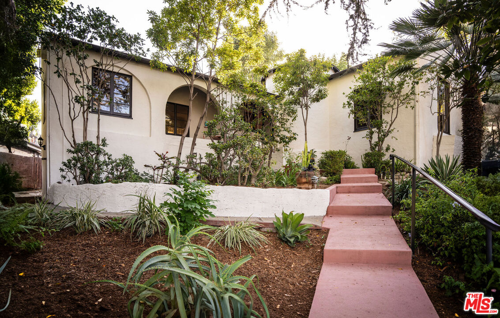
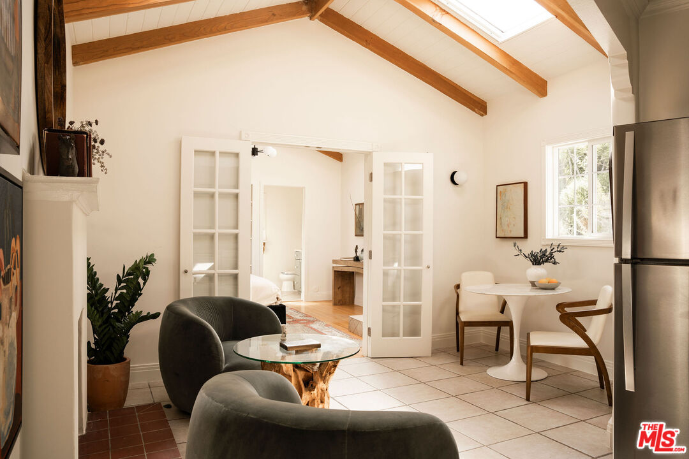
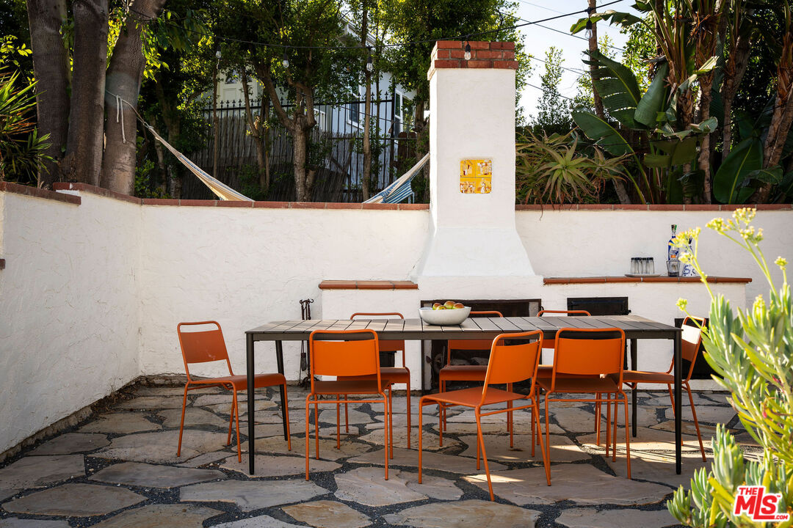

Obsession No. 009
Obsession No. 009Cahuenga Pass · Studio City-adjacent
3895
Fredonia Dr
The living room ceiling is still the original 1929 bow-truss wood, and out back there's a hammock strung between two trees over a gravel garden that feels nothing like the city it's ten minutes from.
Why it made the edit
“A real 1929 cottage with an unverified and slightly irresistible origin story.”
This one sits right where the Cahuenga Pass folds into Studio City, close enough to the Metro stop and Ventura Boulevard that it counts, and it's a 1929 Spanish cottage that made me slow down walking through it.
The story that comes with the listing is that a woman commissioned it and a woman named Frankie Faulkner designed it, one of the vanishingly few female architects working in LA at the time. I want that to be true because it is a genuinely good story, but I looked into it before I told it to you, and there is no licensure record or other known building anywhere for a Frankie Faulkner, nothing beyond this one listing's own description. So I am telling you the story as the story the house comes with, not something I can promise you is documented fact.
What I can promise is real: the bow-truss wood ceiling and the Malibu tile fireplace are original, there is an untouched Art Deco bathroom, and a 1959 addition added a full guest house with its own kitchen and a vaulted, skylit ceiling. Out back is gravel paths, mature fruit trees, and a hammock with the hills rising right behind it.
Three bedrooms, two baths, almost 2,300 square feet on a third of an acre that actually sits flat, which barely exists up in these hills.
It already has an accepted offer, so I do not know how much longer there is to just look at it and dream, but if a real 1929 cottage with an unverified and slightly irresistible origin story is your kind of obsession too, I've got you.



Want to follow this one?
Curious about this one?
Let’s talk.
Listed by James Harm & Benjamin Kahle, Compass. House of Zonshine does not represent this listing. Property details are from listing information and public sources and should be independently verified.